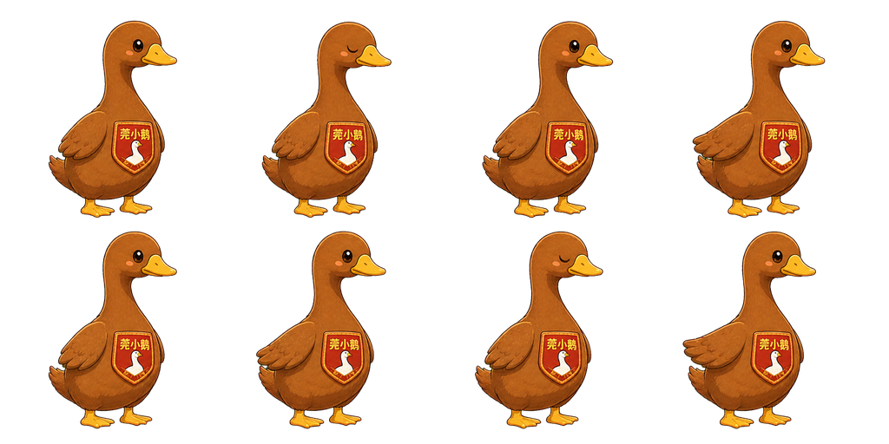
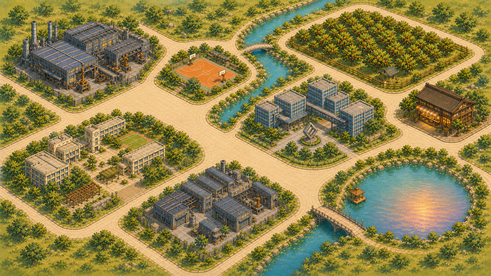

被看见
潮玩通常先被看见、被收藏，是陈列品和周边商品
→
游戏化
游戏化之后，IP 可以成为故事中有生命的角色
→
跟随着
用户不只是观看 IP，而是跟随 IP 进入城市、探索城市
→
做出选择
从"一个商品"转化为"一个正在认识城市的角色"
npm run dev，再从本地服务访问此页面

AI潮玩：用 TRAE 将城市 IP 游戏化的实践
"让 IP 不只是被看见，而是带着用户走进一座城。"
CHAPTER 02 · IP 的角色转化
CHAPTER 03 · 四层转化模型
CHAPTER 04 · 七站城市旅程

CHAPTER 05 · 文化内容 → 玩家动作
CHAPTER 06 · 莞小鹅的身份变化
CHAPTER 07 · 从创意到可玩的流程
CHAPTER 08 · 提出 → 实现 → 试玩 → 修正
CHAPTER 09 · 点击开始你的城市旅程
CHAPTER 10 · 三句话收束
本项目的主体框架和基础工程由 TRAE 搭建；后续部分局部功能、调试和体验优化由其他 AI 工具协助完成。不同工具共同参与，但核心目标始终是把城市 IP 做成真实可体验的内容。